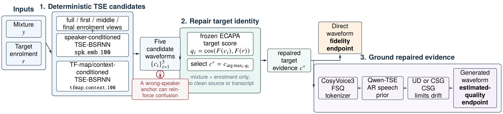

Qwen-TSE proposes
Raw logits rank the next token. A fluent high-score proposal may still drift from the evidence.
EvidenceRaw proposal
02110201
22012200
ICASSP 2027 · Audio demo
Repair the target-speaker evidence first; then constrain the optional LLM speech generator.
Status: Frozen Noisy TEST and all reported Clean TEST rows are complete.
Two failures are easy to conflate. A deterministic waveform TSE system does not introduce autoregressive token hallucination, but under noise it may sound distorted or extract the wrong speaker. An autoregressive speech model can raise estimated perceptual quality, yet its learned prior can change words or speaker identity. Our rule is therefore simple: repair the target evidence first, then ground generation on that repaired evidence.

Conditioning-diverse candidate selection (CDCS-5) selects the most enrollment-consistent waveform from five frozen TSE candidates. It can be returned directly as the content-fidelity endpoint, or tokenized as evidence for Qwen-TSE. The Qwen-TSE speech prior supplies the estimated-quality gain; CSG keeps its next-token choices close to the repaired evidence. This ordering matters: CSG limits generation drift, but cannot repair a wrong-speaker anchor by itself.
The speech tokenizer represents each acoustic token with eight ternary FSQ coordinates. Grounding changes token selection inside Qwen-TSE; it does not change the CDCS-5 selector.
Raw logits rank the next token. A fluent high-score proposal may still drift from the evidence.
Hamming-distant candidates receive a larger penalty, pulling generation toward nearby evidence.
Top-20 proposals are intersected with a radius-2 Hamming ball around the immutable CSG anchor.
Each example isolates one part of the story. Clean targets and interferers are provided only for interpretation; the deployed system never receives them.
The primary follows the interferer. A deterministic two-second enrollment view produces target-consistent evidence. WER: 100% → 0%; speaker margin: −.285 → +.520.
Frozen clean-reference transcript · Whisper-small.en; evaluation only
The speaker-vector candidates fail, but the alternative conditioning expert recovers the target. WER: 100% → 0%; speaker margin: −.543 → +.505.
Frozen clean-reference transcript · Whisper-small.en; evaluation only
The same repaired evidence enters Qwen-TSE. CSG reduces decoder drift, although the direct waveform remains strongest: UD 27.3%, CSG 9.1%, CDCS-5 direct 0% WER.
Frozen clean-reference transcript · Whisper-small.en; evaluation only
Why grounding matters: the ungrounded AR decoder substitutes plausible words (“stove”, “maam”); CSG keeps the output closer to the repaired evidence and removes most of that content drift.
Noisy TEST listening cases are not yet published. They will be selected from the completed frozen outputs by the predeclared deterministic rule, not by manual cherry-picking.
Clean and noisy conditions are reported separately, and DEV is kept distinct from TEST. The headline noisy table uses the 6,000 natural-noise trials; the 2,400 controlled-SNR trials appear separately below rather than being pooled into the main result.
TEST · CLEAN
6,000 trials per system. Clean UTMOS is a post-hoc metric-only evaluation of unchanged frozen outputs; all six displayed systems have 6,000/6,000 scores and zero failures. UTMOS manifest.
| System | Grounding evidence | WER ↓ | C-sw. ↓ | A-sw. ↓ | Spk. margin ↑ | DNSMOS P.808 ↑ | UTMOS ↑ |
|---|---|---|---|---|---|---|---|
| Primary WeSep | — | 13.68 | 7.00 | 6.98 | 0.449 | 3.688 | 3.606 |
| TF-map/context WeSep | — | 8.56 | 2.72 | 2.55 | 0.491 | 3.718 | 3.702 |
| CDCS-5 direct | — | 6.54 | 0.88 | 0.78 | 0.506 | 3.699 | 3.647 |
| Qwen-TSE UD | CDCS-5 | 14.08 | 1.00 | 0.43 | 0.422 | 3.705 | 3.914 |
| Qwen-TSE fixed CSG | CDCS-5 | 12.74 | 1.00 | 0.23 | 0.422 | 3.699 | 3.910 |
| Qwen-TSE GNR | CDCS-5 | 13.43 | 1.07 | 0.23 | 0.423 | 3.702 | 3.915 |
Reading. CDCS-5 direct is the best clean content-fidelity endpoint. Qwen-TSE systems receive higher predicted naturalness, but UTMOS does not establish content or speaker correctness.
TEST · NATURAL NOISE
6,000 natural-noise trials per system from the one permitted TEST run.
| System | Grounding evidence | Raw WER ↓ | C-sw. ↓ | A-sw. ↓ | Spk. margin ↑ | DNSMOS OVRL ↑ | UTMOS ↑ |
|---|---|---|---|---|---|---|---|
| Primary WeSep | — | 46.17 | 15.57 | 14.57 | 0.304 | 2.291 | 2.061 |
| CDCS-5 direct | — | 35.64 | 7.95 | 7.17 | 0.363 | 2.201 | 1.990 |
| Qwen-TSE UD | CDCS-5 | 58.00 | 10.13 | 1.68 | 0.378 | 3.086 | 3.253 |
| Qwen-TSE fixed CSG | CDCS-5 | 53.90 | 9.48 | 0.52 | 0.386 | 3.082 | 3.147 |
| Qwen-TSE adaptive CSG | CDCS-5 | 50.99 | 9.72 | 0.98 | 0.384 | 3.093 | 3.196 |
| Qwen-TSE adaptive CSG+GNR | CDCS-5 | 54.79 | 9.65 | 0.98 | 0.384 | 3.095 | 3.207 |
Reading. CDCS-5 direct is the strongest content-fidelity endpoint. Within Qwen-TSE, fixed CSG reduces both raw WER and acoustic switching relative to UD, but no generated condition overtakes CDCS-5 direct on WER.
DEV · CLEAN
6,000 trials per system; configuration selection and ablation evidence. A complete frozen Clean DEV UTMOS table was not run, so TEST UTMOS values are not copied here.
| System | Grounding evidence | WER ↓ | C-sw. ↓ | A-sw. ↓ | Spk. margin ↑ | DNSMOS P.808 ↑ |
|---|---|---|---|---|---|---|
| Primary WeSep | — | 13.88 | 7.10 | 6.88 | 0.459 | 3.709 |
| CDCS-2 direct | — | 7.29 | 1.40 | 1.17 | 0.513 | 3.728 |
| CDCS-5 direct | — | 7.01 | 1.13 | 0.88 | 0.515 | 3.722 |
| CDCS-5 S3 reconstruction | — | 13.02 | 1.25 | 0.52 | 0.427 | 3.736 |
| Qwen-TSE UD | Primary | 20.97 | 7.20 | 1.23 | 0.419 | 3.745 |
| Qwen-TSE fixed CSG | Primary | 19.06 | 7.15 | 1.07 | 0.419 | 3.737 |
| Qwen-TSE UD | CDCS-2 | 14.82 | 1.58 | 0.72 | 0.427 | 3.754 |
| Qwen-TSE fixed CSG | CDCS-2 | 12.88 | 1.52 | 0.60 | 0.428 | 3.745 |
| Qwen-TSE UD | CDCS-5 | 14.10 | 1.32 | 0.55 | 0.428 | 3.752 |
| Qwen-TSE fixed CSG | CDCS-5 | 12.51 | 1.27 | 0.48 | 0.428 | 3.744 |
DEV · NATURAL NOISE
6,000 natural-noise trials per system. Raw, uncapped utterance-mean WER is shown; the separate 2,400 controlled-SNR DEV trials are reported below.
| System | Grounding evidence | Raw WER ↓ | C-sw. ↓ | A-sw. ↓ | Spk. margin ↑ | DNSMOS OVRL ↑ | UTMOS ↑ |
|---|---|---|---|---|---|---|---|
| Primary WeSep | — | 45.88 | 16.12 | 15.15 | 0.312 | 2.302 | 2.046 |
| CDCS-5 direct | — | 39.62 | 8.70 | 7.28 | 0.371 | 2.193 | 1.969 |
| Qwen-TSE UD | CDCS-5 | 59.57 | 10.62 | 2.30 | 0.383 | 3.098 | 3.261 |
| Qwen-TSE fixed CSG | CDCS-5 | 55.48 | 10.25 | 0.98 | 0.391 | 3.092 | 3.154 |
| Qwen-TSE adaptive CSG | CDCS-5 | 55.85 | 10.07 | 1.28 | 0.390 | 3.107 | 3.208 |
| Qwen-TSE adaptive CSG+GNR | CDCS-5 | 59.51 | 10.20 | 1.30 | 0.390 | 3.110 | 3.221 |

Recovery rises at 10–15 dB, where wrong-speaker extraction remains identifiable and complementary target evidence is still usable. Across the combined 8,400-trial Noisy DEV set (6,000 natural-noise + 2,400 controlled-SNR), selected recovery is 54.87%, the five-candidate oracle ceiling is 62.55%, and control regression is .391%.
CONTROLLED NOISE · DEV AND TEST
Each cell reports raw WER / A-sw. in percent; 480 trials per SNR and system. Raw WER may exceed 100% because ASR insertions are not capped. Every Qwen-TSE row uses CDCS-5 grounding evidence; GNR uses K=20, R=2.
| System | −5 dB | 0 dB | 5 dB | 10 dB | 15 dB |
|---|---|---|---|---|---|
| CDCS-5 direct | 114.12 / 37.29 | 98.30 / 31.25 | 63.70 / 19.79 | 30.80 / 8.12 | 15.88 / 3.75 |
| Qwen-TSE UD | 137.56 / 11.46 | 115.70 / 5.62 | 92.36 / 2.50 | 50.06 / 2.29 | 29.80 / 1.67 |
| Qwen-TSE fixed CSG | 132.99 / 3.54 | 104.78 / 2.92 | 93.56 / 1.25 | 45.69 / 1.25 | 25.96 / 1.04 |
| Qwen-TSE adaptive CSG | 130.58 / 5.83 | 110.77 / 2.92 | 84.84 / 1.46 | 50.42 / 1.46 | 26.38 / 1.04 |
| Qwen-TSE adaptive CSG+GNR | 139.37 / 5.62 | 113.81 / 3.33 | 79.56 / 1.46 | 50.63 / 1.46 | 26.94 / 1.04 |
| System | −5 dB | 0 dB | 5 dB | 10 dB | 15 dB |
|---|---|---|---|---|---|
| CDCS-5 direct | 104.78 / 34.58 | 89.49 / 29.17 | 54.03 / 16.67 | 27.95 / 7.08 | 20.87 / 4.79 |
| Qwen-TSE UD | 136.69 / 9.58 | 113.67 / 6.67 | 78.25 / 4.17 | 47.15 / 2.29 | 29.73 / 2.08 |
| Qwen-TSE fixed CSG | 137.44 / 3.33 | 107.18 / 2.71 | 83.66 / 2.08 | 41.33 / 2.08 | 24.93 / 1.67 |
| Qwen-TSE adaptive CSG | 116.77 / 7.08 | 106.38 / 3.96 | 79.37 / 2.92 | 45.22 / 1.88 | 25.89 / 2.08 |
| Qwen-TSE adaptive CSG+GNR | 116.93 / 6.67 | 121.06 / 4.58 | 79.92 / 2.71 | 43.63 / 2.08 | 26.00 / 2.08 |
MECHANISM · FOUR SPLITS
Swap/control cohorts are defined by SI-SDR and therefore are not the same denominator as the full-set CAMPPlus A-sw. rate.
| Split | Trials | Primary swaps | Selected recovered | Oracle recovered | Controls | Regressions |
|---|---|---|---|---|---|---|
| Clean DEV | 6,000 | 405 | 355 (87.65%) | 362 (89.38%) | 5,586 | 2 (.0358%) |
| Clean TEST | 6,000 | 398 | 355 (89.20%) | 360 (90.45%) | 5,588 | 2 (.0358%) |
| Noisy DEV · natural | 6,000 | 679 | 397 (58.47%) | 449 (66.13%) | 4,707 | 19 (.4037%) |
| Noisy TEST · natural | 6,000 | 646 | 374 (57.89%) | 431 (66.72%) | 4,709 | 8 (.1699%) |
| Configuration | Candidates | Qwen-TSE passes | RTF ↓ | Peak VRAM | Swap recovery ↑ |
|---|---|---|---|---|---|
| Primary WeSep | 1 | — | 0.057 | 20.37 GiB | 0.00% |
| CDCS-2 direct | 2 | — | 0.105 | 20.38 GiB | 83.21% |
| CDCS-5 direct | 5 | — | 0.208 | 20.47 GiB | 87.65% |
| CDCS-2 + Qwen-TSE CSG | 2 | 1 | 0.473 | 20.38 GiB | 79.01% |
| CDCS-5 + Qwen-TSE CSG | 5 | 1 | 0.573 | 20.47 GiB | 80.74% |